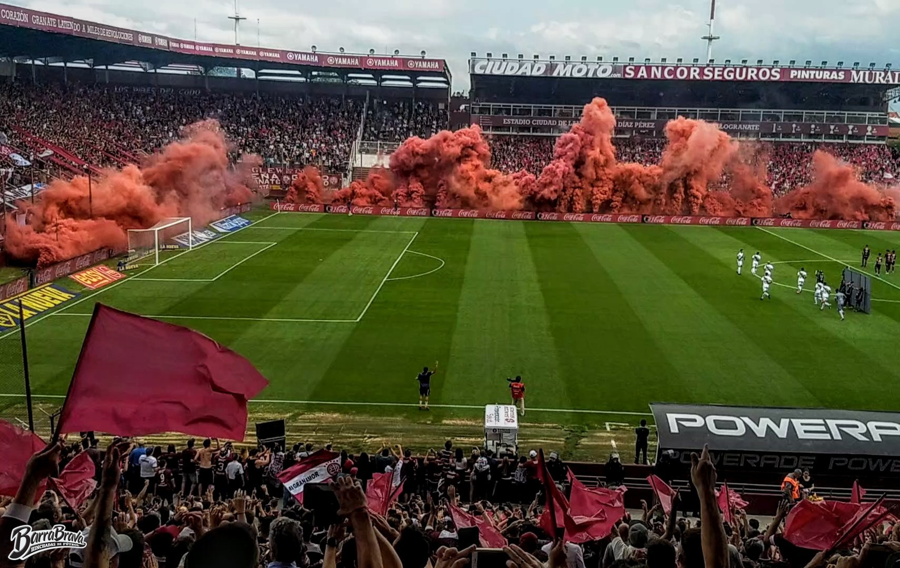

Con dos golazos, Lanús volvió a festejar ante Banfield y se afianza arriba
29 de marzo de 2023
El 29 de mayo pero de 2016, en el Monumental, Lanús se llevó el título de Campeón de Primera Divisón 2016 o campeonato de Transición como también se lo llegó a "bautizar", tras golear a San Lorenzo por 4-0, con goles de Junior Benítez, Miguel Almirón, José Sand y Lautaro Acosta. De esta manera, Lanús sumaba su segunda estrella a nivel local, la anterior fue el Apertura 2007, que tuvo a Tigre y Banfield como los escoltas.
1. El equipo
El equipo dirigido por Jorge Almirón, formó con Fernando Monetti; José Luis Gómez, Gustavo Gómez, Diego Braghieri y Maximiliano Velázquez; Román Martínez, Iván Marcone, Miguel Almirón; Lautaro Acosta, José Sand y Oscar Benítez. Luego ingresaron Nicolás Pasquini por Velázquez, Nicolás Aguirre por Sand y Víctor Ayala por Benítez.
2. El partido
El desarrollo del encuentro casi que no tuvo equivalencias. Recordemos que aquel equipo de Lanús fue la máxima expresión que Almirón pudo lograr como entrenador. Por funcionamiento fue un dominador absoluto ante un San Lorenzo que casi se entregó, resignado al juego del Granate.
3. El torneo
El torneo que se llevó el Granate, tuvo la particularidad que se dividió en dos grupos y los ganadores de ambas zonas se enfrentaban en un único partido que, en esta oportunidad, fue en el estadio de River.
Ramiro Zuazo